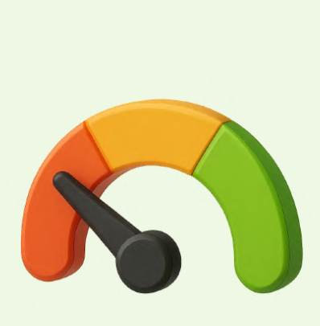
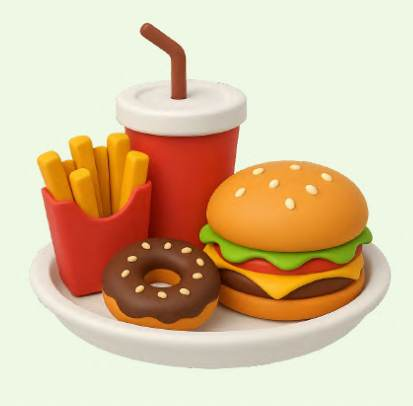
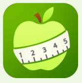

02 · Food Delivery · Accessibility · Product Redesign
GalaxyEats
A redesigned food-ordering experience with personalized health filters, AI-assisted guidance, and meal suggestions for users with food allergies and chronic health conditions.
The Problem
Millions of people with chronic health conditions and allergies use food delivery apps, yet those platforms don’t provide personalized guidance to help them make safe and informed meal choices.
Unclear Ingredient Info
Users often can’t tell what’s in their food, making it risky for those with allergies or health conditions.
No Personalized Filters
There’s no way to filter meals based on medical advice, such as for diabetes, hypertension, or kidney disease.

Low Confidence
Users with chronic conditions feel unsure and anxious when ordering meals due to lack of guidance.

Not Health-Friendly
Delivery apps mainly promote fast food, making healthy and safe choices harder to find.
Research & Insights
According to the research, we found that
4 out of 10
Gen Z (age 13-28) and Millennial respondents reported living with a chronic condition.
One Medical
53.8%
of adults (age 18-34) had at least one chronic condition, and 22.3% had more than one condition.
Watson et al.
Nearly 11%
of U.S. adults have at least one food allergy.
FARE
Twice a week
is how often young adults (age 18-25) used food delivery apps, approximately.
Buettner et al.
Observe the gap
Uber Eats has only a few basic dietary filters and doesn’t support filtering based on food-related health conditions.
This makes it risky for users with chronic conditions or allergies to confidently order meals.
Why us
 MyNetDiary | Yuka | UberEats | UberEats with our solution | |
|---|---|---|---|---|
| Food Ordering | No | No | Yes | Yes |
| Health-Based Filtering | Yes | Yes | No | Yes |
| Allergy Warnings | Yes | Yes | Yes | Yes |
| Chatbot Guidance | No | No | No | Yes |
| Delivery | No | No | Yes | Yes |
The Solution
Users choose their diagnoses or allergies once, and the menu adapts to them.
Select any diagnoses or allergies at the start. This simple step personalizes the food experience.
Green dot: suitable. Red dot: unfavorable. Users decide quickly without reading every ingredient.
Smart Warnings & Recommendations
When it appears
After a user selects a menu item marked with a red dot that may be unsuitable for their chronic health conditions.
Personalized warning
Helps users make informed dietary choices.
Alternative meals
Smart suggestions with a quick calorie comparison support better decisions.
Go Back, primary
Encourages users to reconsider and return to healthier menu options.
Ignore, secondary
Lets users dismiss the warning and proceed at their own discretion.
Concept design. Warnings and meal suggestions have not been clinically validated.